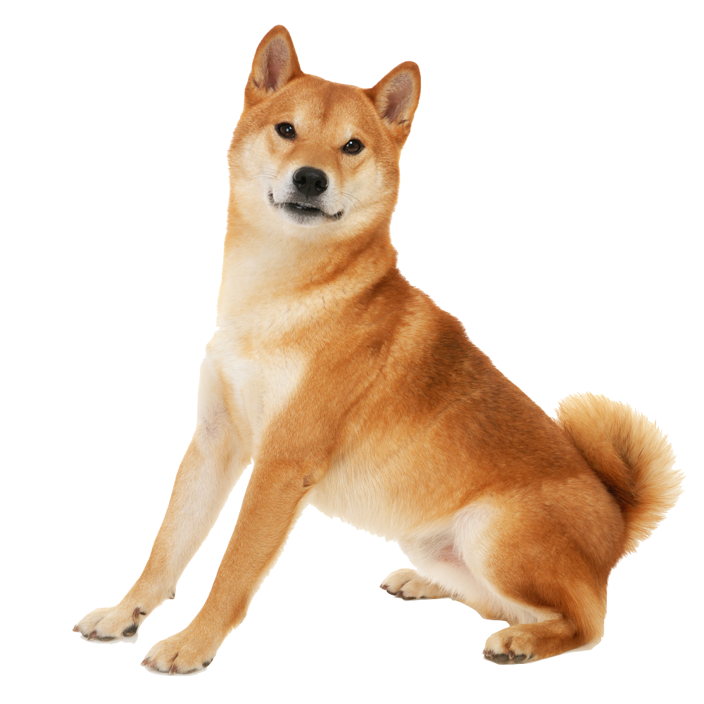

~The King of all Shibes~
Shiba Inus are medium sized dogs, and are extremely energetic, intelligent, and confident, requiring them to get exercise every day whether by vigorous play or by a walk. Their energy and confidence may make them hard to control, but they are easy to do basic training such as potty training due to their intelligence. Shibas are usually good with children and only require basic grooming like a weekly brushing and the occasional bath.
Brought to America from Japan as recently as 60 years ago, Shiba Inus are growing in popularity in the West and are already the most popular breed in their homeland. Their white markings combined with their coloring (red, red sesame, or black and tan) and their alert expression and smooth stride makes them almost foxlike. They are sturdy, muscular dogs with a bold, confident personality to match.
Doge is a slang term for dog that is primarily associated with pictures of Shiba Inus (nicknamed "Shibe") and internal monologue captions on Tumblr. These photos may be photoshopped to change the dog's face or captioned with interior monologues in Comic Sans font. On February 23rd, 2010, Japanese kindergarten teacher Atsuko Sato posted several photos of her rescue-adopted Shiba Inu dog Kabosu to her personal blog. Among the photos included a peculiar shot of Kabosu sitting on a couch while glaring sideways at the camera with raised eyebrows (shown, right). This is the origin of the doge meme.